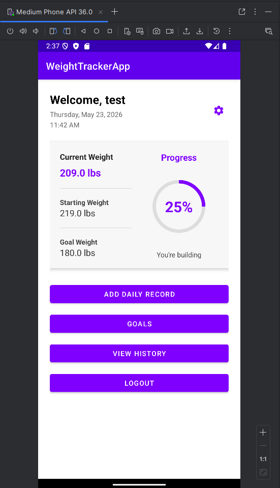
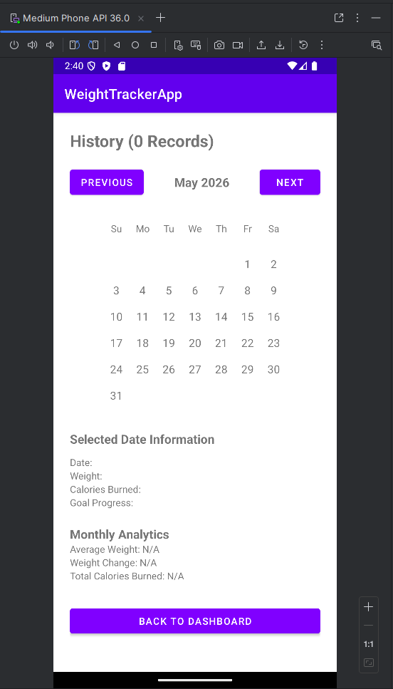
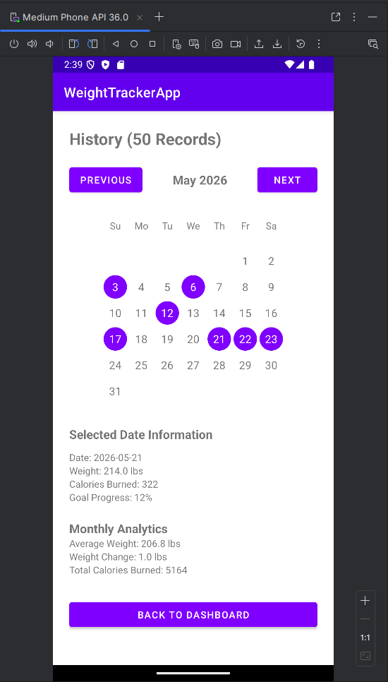
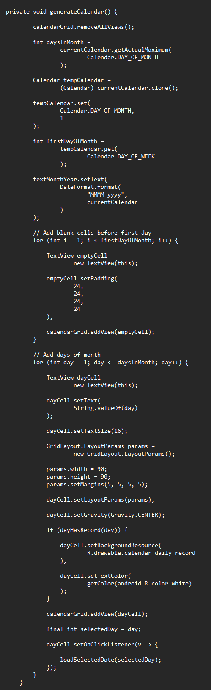
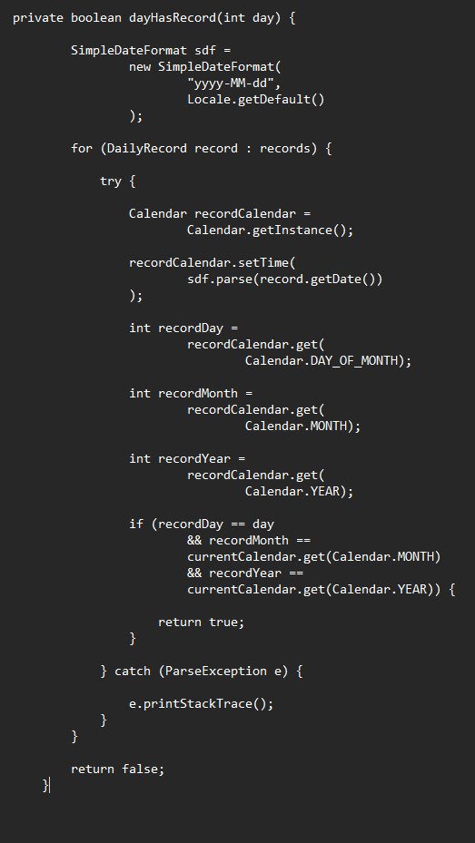
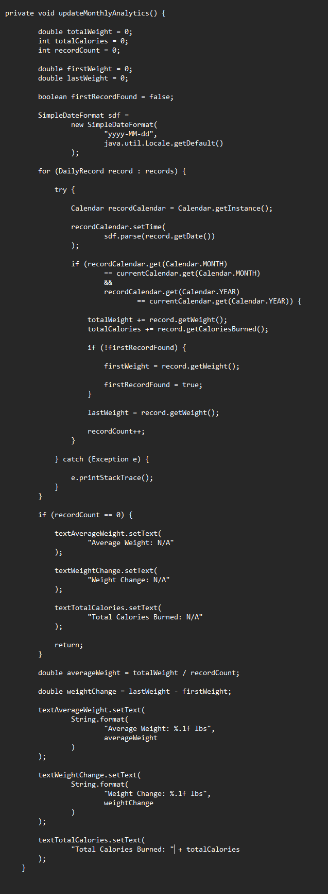

The focus of Category Two was improving the organization, retrieval, processing, and visualization of historical user data. While the application already allowed users to record DailyRecord entries, there was no effective way to review historical information or identify long-term progress trends.
To address this limitation, I developed a historical tracking system built around calendar visualization, date-based record retrieval, and monthly analytics processing. These enhancements transformed stored data from simple database records into meaningful information that users could review and analyze over time.
The largest enhancement introduced during this category was a dedicated History screen that allows users to browse and review previously stored DailyRecord entries. Rather than displaying records in a simple list, historical data is presented through a dynamic calendar interface that makes progress easier to visualize and understand.
The History screen provides centralized access to historical records while improving usability and long-term progress visibility. Users can navigate between months, review previously recorded data, and analyze progress using information that already exists within the application database.
History Screen Screenshots
History Activity Added to Dashboard

History Activity Blank Screen

History Activity Analytics

A custom calendar generation system was developed to organize historical data by month and year. Rather than relying on a built-in Android calendar component, the calendar is generated dynamically at runtime. This approach provided greater flexibility for integrating record highlighting, date selection, and future expansion opportunities.
Calendar generation requires date calculations, collection traversal, and dynamic user interface updates. The system creates calendar layouts for each month while maintaining proper alignment between calendar dates and stored DailyRecord information.
Calendar Generation Screenshot

Historical data retrieval was implemented through date-based searching and filtering operations. The application processes DailyRecord collections to identify records that belong to the currently selected month and highlights those dates within the calendar interface.
Users can select individual dates to retrieve stored weight and calorie information for that specific day. These retrieval workflows demonstrate practical applications of searching, filtering, and collection traversal techniques while improving accessibility of historical information.
Historical Record Screenshot

To increase the value of stored data, monthly analytics were introduced to calculate and summarize historical performance metrics. The application processes DailyRecord collections to calculate average weight, total calories burned, and monthly weight change statistics.
These calculations transform raw tracking data into meaningful information that users can use to evaluate progress over time. Aggregation operations provide insight into trends and overall performance while maintaining a simple and user-friendly experience.
Analytics Screenshots

This enhancement relied heavily on collection-based processing techniques. DailyRecord objects are stored and processed through List-based data structures that support searching, filtering, traversal, and aggregation operations.
Calendar generation requires traversing collections of DailyRecord objects, filtering records by month and year, mapping matching records to calendar cells, and dynamically updating the user interface. Additional aggregation operations are used to calculate average weight, total calories burned, and weight change metrics.
These implementations demonstrate practical applications of data structures and algorithmic processing within a real-world Android application environment.
Testing focused on verifying proper calendar generation, historical record retrieval, month navigation, and analytics calculations. Validation included confirming correct month transitions, accurate record highlighting, successful selected-date retrieval, and proper calculation of monthly analytics.
Additional testing verified correct handling of months containing no records, navigation across multiple years, and accurate display of historical progress information. These tests helped ensure reliability of both the calendar visualization system and analytical processing workflows.
This enhancement significantly increased the value of the application's stored data by transforming historical records into useful and accessible information. Rather than simply collecting DailyRecord entries, users can now browse previous records, review progress trends, and analyze performance through a centralized historical tracking system.
The project reinforced the importance of organizing and processing data in ways that provide meaningful insight to users. Through calendar generation, record retrieval, filtering, searching, and analytics processing, this enhancement demonstrated how algorithms and data structures can improve both functionality and user experience.